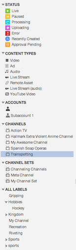

On the MANAGE page, you can sort and filter your video details to focus on precisely
what interests you.
You can use the hierarchical view in the left navigation panel on the
MANAGE page to filter the list of videos on the
right to see specific types of videos.
Navigation Panel
Consider the following example navigation panel.

You can click on any entry in the panel to limit the view on the right to videos that
match that entry you click. In this example, the channel named
Trainspotting has been selected.
Applying a Filter to the Assets List
- To filter assets by status, click a status under STATUS.
- To filter assets by type of content, click the type under CONTENT
TYPES.
- If you want to see live videos that have the Hockey label,
under Status click Live and under ALL
LABELS, click Hobbies > Hockey
- If you want to see all videos belonging to your Subaccount1,
under ACCOUNTS, click Subaccount1.
- Only videos for Subaccount1: under CONTENT TYPES click
Video, and under ACCOUNTS, click
Subaccount1.
- To filter assets by channel, click a channel under CHANNELS.
- To filter assets by channel set, click a channel set under CHANNEL SETS.
- To filter by assets associated by a label, click the label under ALL LABELS, expanding the list as needed.
- To filter by assets that are not associated with a label, click ASSETS WITH NO LABELS.
Removing a Filter
To remove the filter, click the red X in the search pane.